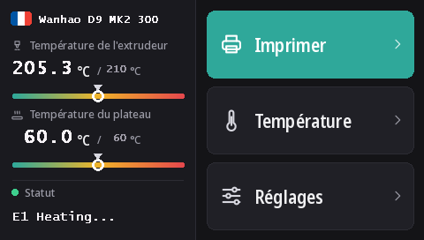

Flasher l'écran tactile de la Duplicator 9
Toutes les D9, de la MK1 à la MK3, ont le même écran tactile DWIN T5 (480 × 272). Avec ces firmwares, il fonctionne avec DGUS Reloaded 2.0, notre nouvelle interface en 16 langues, flashée depuis une carte microSD.
Télécharger DWIN_SET.zip (DGUS Reloaded 2.0)
Ce qu'apporte DGUS Reloaded 2.0
- 16 langues : English, Français, Deutsch, Español, Italiano, Português, Nederlands, Polski, Türkçe, Русский, العربية, हिन्दी, 中文, 日本語, 한국어, Bahasa Indonesia. Touchez le drapeau à côté du nom de l'imprimante sur l'accueil pour changer ; l'imprimante retient le choix.
- Une page capteur de filament : Réglages → Filament → Capteur de filament. Voir Capteur filament.
- Une ligne d'état qui reste : le dernier message, Ready par exemple, reste affiché au lieu de disparaître au bout de 30 secondes.
- Des jauges de température pour la buse et le plateau, avec la consigne marquée.
- Un nouveau look pour toutes les pages : thème sombre, boutons plus grands, pictogrammes dans les fenêtres.

1. Formater la carte microSD
- Windows : Windows 11 refuse souvent le FAT32 ; utilisez GUIFormat avec une taille d'unité d'allocation de 4096.
- Linux :
sudo mkfs.fat -F 32 -s 8 /dev/sdX1(vérifiez d'abord le périphérique aveclsblk). - macOS :
sudo newfs_msdos -F 32 -c 8 /dev/diskN(vérifiez avecdiskutil list).
2. Copier les fichiers
Décompressez DWIN_SET.zip et copiez tout le dossier DWIN_SET à la racine de la carte.
3. Flasher
- Éteignez l'imprimante et débranchez-la.
- Ouvrez l'avant du socle pour accéder à l'arrière de l'écran, où se trouve son lecteur microSD.
- Insérez la carte et allumez. L'écran affiche la mise à jour sous 10 à 30 secondes ; attendez qu'il redémarre normalement, 1 à 3 minutes en tout.
- Éteignez, retirez la carte, refermez le socle.
La vidéo de mise à jour de l'écran D9 montre où se trouve le lecteur.
D'où elle vient
DGUS Reloaded 2.0 redessine page par page DGUS Reloaded 1.0.3 (de Desuuuu, puis Neo2003). Ses sources, le programme qui génère les fichiers de l'écran et les traductions sont sur GitHub. Un mot faux ou maladroit dans votre langue ? Dites-le sur Discord ou ouvrez un ticket là-bas.
Pour revenir à DGUS Reloaded 1.0.3, par exemple avec un firmware plus ancien que la v2.0.9, flashez DWIN_SET_1.0.3.zip de la même façon.
Revenir à l'écran Wanhao
Le firmware d'écran Wanhao ne fonctionne qu'avec le firmware de carte mère Wanhao. MK1 : le fichier écran de la version correspondante sur la page MK1. MK1 + kit, MK2 et MK3 : DWIN_SET_MK2.zip. Même procédure.